Quantum chromodynamics (QCD) is a quantum Yang-Mills
field theory describing the strong force, with the gauge group
.
has eight generators and, hence, eight gauge bosons
()
called gluons. The only other elementary particles which interact with
the strong force — i.e., which don’t live in the trivial representation of
— are the quarks. They live in the three-dimensional fundamental
representation and thus possess three extra DoFs beyond vanilla spinors,
which we call their “color” (hence, quantum chromodynamics). The three
orthogonal eigenstates in this representation are colloquially referred to
as labeled red, green, and blue, and mathematically the quark fields
() labeled with
extra color indices .
Putting this together, the QCD Lagrangian, with all the indices labeled
explicitly is:
where is the strong coupling
constant, is the gluon field
strength tensor, are the
structure constants of ,
are the
generators of
in the fundamental representation, the sum over
is running over the six
flavors, and the indices
and
label the eight gluons and the three colors of quarks, respectively. The six flavors
of quarks have different masses and charges, as shown in Figure 4.2.
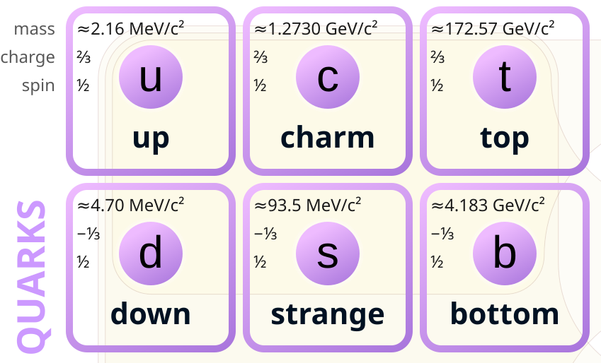
Figure 4.2: The quarks in the SM, reproduced from Ref. [2].
QCD is an extremely rich and complex theory due to its non-abelian gauge
symmetry, the six different flavors of quarks, and the unique strength and running
of its coupling, shown in Figure 4.3. Observe its property of weak coupling
and asymptotic freedom at high energies, versus the extremely high
value
of at
low energies leading to the phenomenon of confinement. Note also that
appears to diverge in
Figure 4.3 at around ,
a sign of perturbation theory breaking down. This
limit is considered the characteristic energy scale of QCD,
.2
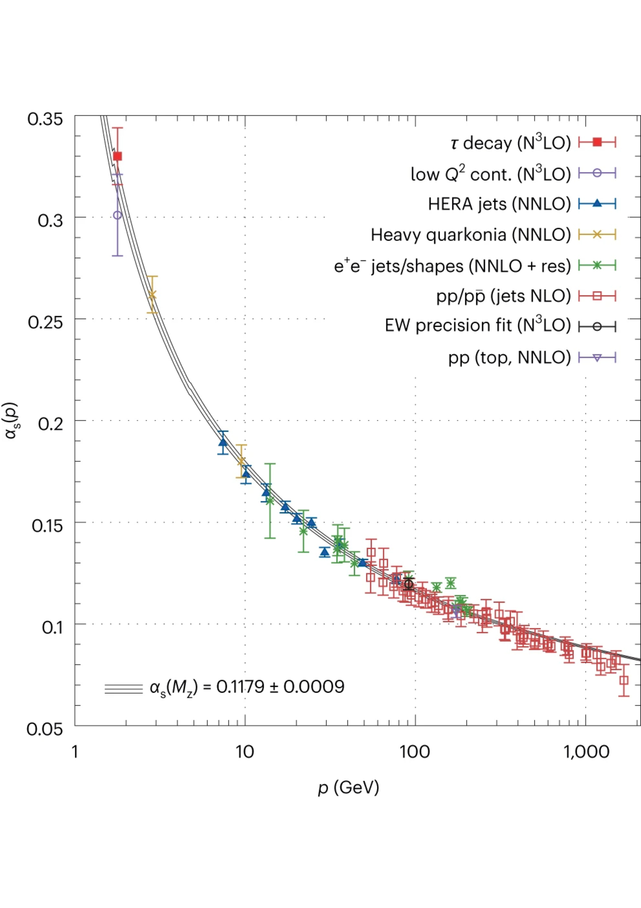
Figure 4.3: The theoretically predicted running of the strong coupling
as a function of the energy scale along with experimental measurements,
reproduced from Ref. [72].
The
coupling strength means that the standard perturbative techniques we have
discussed are not applicable at our usual energy scales; instead, we must rely on
nonperturbative techniques such as numerical simulations of QCD on a discretized
spacetime lattice (see e.g. Schwartz [16] Chapter 25). Because of this, QCD is
one of the least understood and most exciting areas of study in modern
physics.
4.1.1 Asymptotic freedom and confinement
As discussed above, a key phenomenological characteristic of the strong
force is asymptotic freedom, wherein at high energies quarks and gluons
behave as free particles. This also means that perturbative techniques
can be applied at high energies; indeed, we can derive an analogous
“Coulomb force”, based on tree-level quark-quark scattering amplitudes, for
quarks at very short distances. This force turns out to always be attractive
between quarks and antiquarks, as well as between two or even three quarks in
different color states: the “aim” of the force appears to always be to form
color-neutral bound states. These are called mesons for the case of an antiquark
and quark pair, and baryons for three quarks.
At longer distances we enter the strong-coupling and nonperturbative regime,
in which the dynamics are harder to understand. However, through lattice QCD
simulations, we are able to see the emergence of a “flux tube” pulling
quarks together as they are pushed apart, as shown in Figure 4.4. This
phenomenon is referred to as confinement, and it means we can never observe
free quarks or gluons outside high-energy colliders. Both the long- and
short-distance behavior of the strong force conspire to always confine quarks
in color-neutral hadrons. The scale of confinement is naturally set by
,
which is hence roughly the radius of the proton and other hadrons
(fm in
SI).
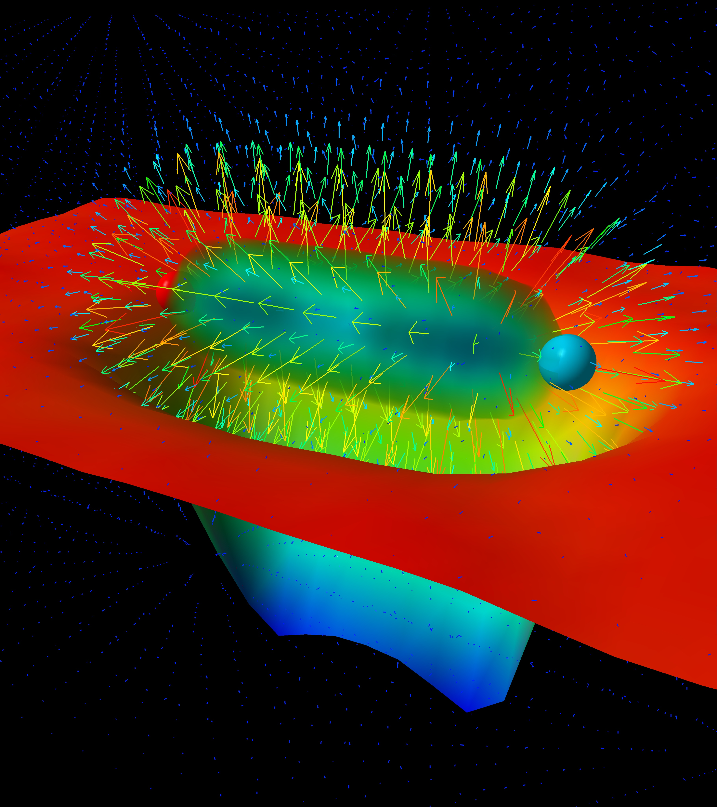 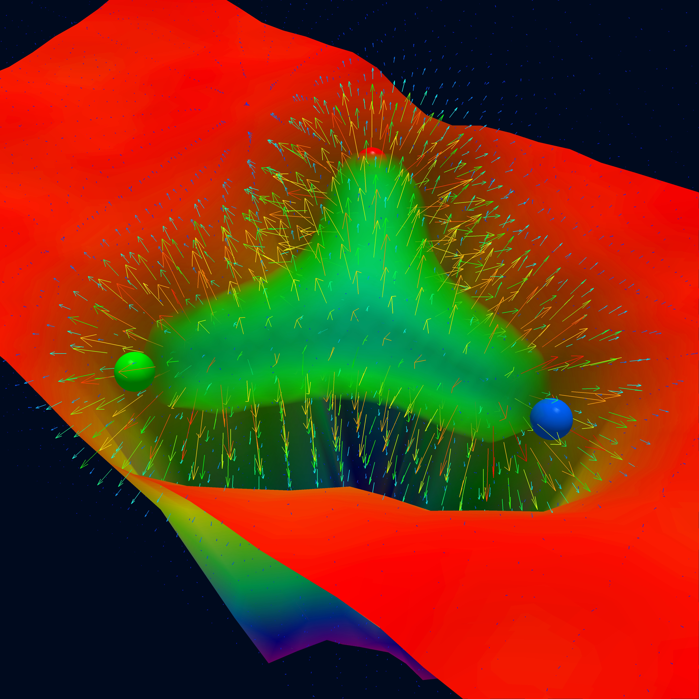
Figure 4.4: “Flux tubes” between a quark and anti-pair inside a meson (left)
and three quarks in a proton (right), reproduced from Refs. [73, 74].
4.1.2 Quarks and the eightfold way
Since their discovery in the 1920s and 30s, the proton and neutron and
were believed to be elementary particles along with the electron and
photon. In fact, due to confinement, the first experimental evidence of
quarks was not found until the 1960s. However, already in 1932, the
remarkably similar masses of the two nucleons surprised physicists
and led Heisenberg, Wigner, and others to hypothesize an underlying
symmetry between them (later named isospin) [75, 76]. The intrigue only
increased in the next decades, during which new cosmic ray, cyclotron, and
bubble chamber experiments discovered a veritable “zoo” of hadrons,
exemplified by a 1964 table of particles in Figure 4.5. While all appeared
elementary, several had surprisingly similar properties such as mass and
spin, and could also be grouped into invariant subspaces of the isospin
group.
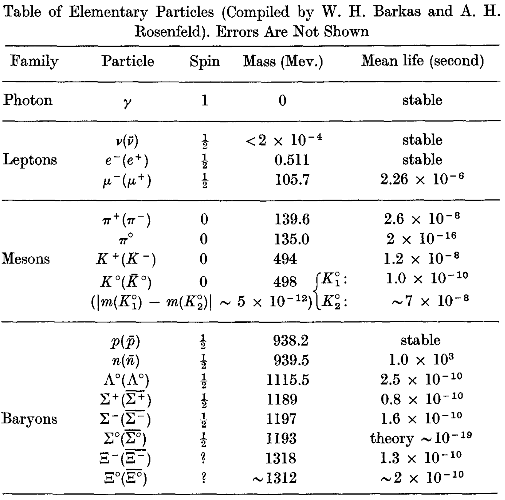
Figure 4.5: A table of what were considered to be elementary particles in
1964, reproduced from Ref. [77].
In 1961, Murray Gell-Mann and Yuval Ne’eman independently realized that the
new hadrons could elegantly fit into representations of a larger symmetry group,
[78, 79].
Gell-Mann and George Zweig in 1964 then independently showed that
this could be explained physically by hadrons being composed of
combinations of three fundamental particles, named the “up”, “down”, and
“strange quarks”, with the former two carrying isospin up and down,
respectively [80, 81]. Gell-Mann named this model the “eightfold way” (since
) and
was awarded the Nobel Prize in 1969 for this work.
Examples of baryons (three-quark hadrons) in the octet and
decuplet (dimension 8 and 10, respectively) representations of
are shown in Figure 4.6, sorted by their isospin along the “z” axis
(
# of up quarks - # of down quarks) and strangeness
( # of strange quarks).
Note that this
symmetry is only approximate; it is broken by the different masses of
the quarks. However, their significantly smaller masses compared to
mean it remains
a useful symmetry for categorizing hadrons. On the other hand, broader “symmetries”
such as
through
including the heavier charm, bottom and top quarks are broken so heavily by
their higher masses that they are not helpful for characterizing the heavier
hadrons.
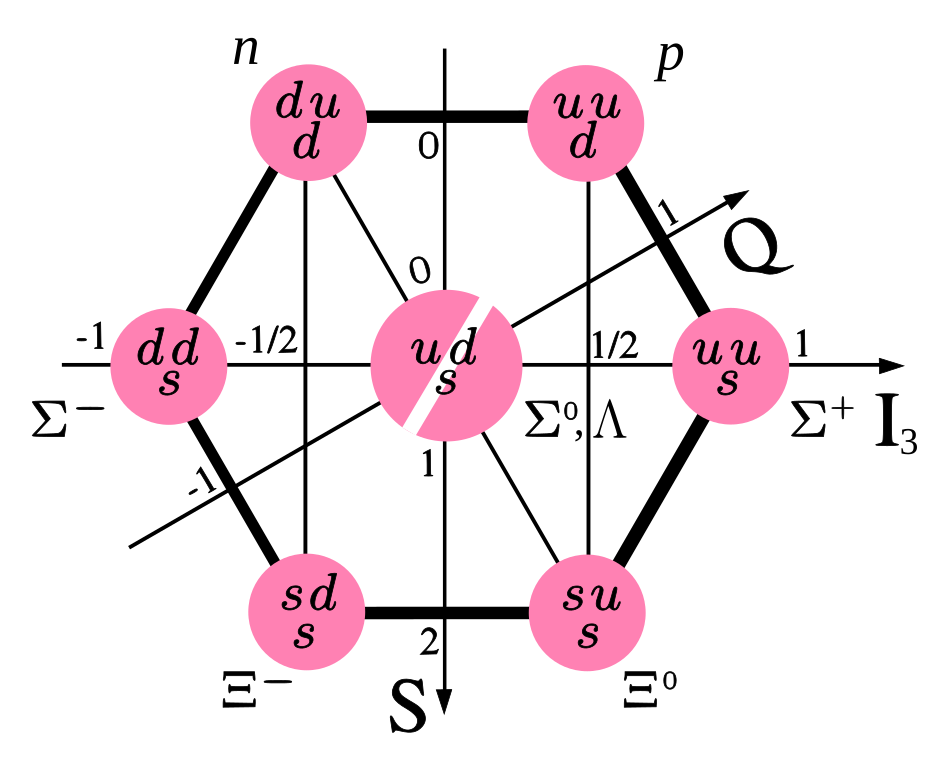 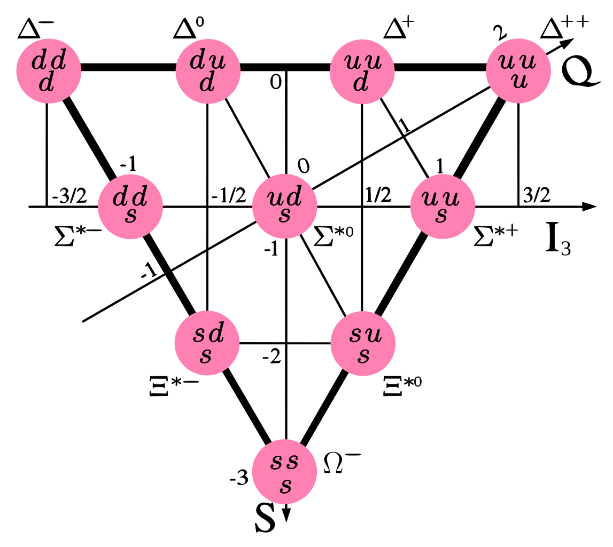
Figure 4.6: Baryons in the octet (left) and decuplet (right) representations of
,
reproduced from Ref. [82].
This fourth “charm” quark was notably predicted by Sheldon Glashow, John
Iliopoulos, and Luciano Maiani in 1970 to explain the observed suppression of
-boson-mediated
flavor-changing neutral currents [83] (and also to match the number of known leptons at the
time). This, and the quark model as a whole, was famously validated by the discovery of a
charm-anti-charm
bound state, named the
meson, simultaneously by Burton Richter’s team at the Stanford Linear
Accelerator Center (SLAC) and Samuel Ting’s team at Brookhaven National
Laboratory in 1974 [84, 85], both of whom received the Nobel Prize in
1976.
A year before this, Makoto Kobayashi and Toshihide Maskawa had proposed
the existence of a third generation of quarks to explain the observed CP-violation
in weak interactions [86]. This proposal gained more traction after the
discovery, as well as the discovery of a third-generation lepton, the
, by
Martin Lewis Perl’s team in electron-positron collisions at SLAC between 1973
and 1977 [87].
In the end, both third generation quarks were discovered at the Fermi
National Accelerator Laboratory (Fermilab): first the bottom quark in 1977 by
Leon Lederman’s team on the E288 experiment [88]; and then, much later, the
top quark in 1995 by the CDF and DØ experiments at the Tevatron [89, 90]. The
bottom quark was discovered indirectly, as with the charm quark, through the
observation of a bottom quark-antiquark bound state called bottomium, or the
meson, in proton-nucleon collisions.
The top quark, on the other hand, is highly unique because of its high
mass, and it decays too quickly to form bound states. Hence, it is the
only quark to have been observed “directly”, through its decays to a
boson and
a bottom quark. It is the heaviest known elementary particle, which is why its discovery
required the 1
center-of-mass energy proton-antiproton collisions of the Tevatron. The unique
nature of the heavy quarks leads to a rich phenomenology at high energy
colliders such as the LHC, particularly in the context of the jets they form
(Section 4.1.4).
4.1.3 The parton model
Some physicists, including Gell-Mann himself, initially believed quarks not to be
real particles but simply mathematical conveniences to describe hadrons. It was
only through deep inelastic scattering (DIS) experiments in the 1960s and 70s at
SLAC — in which high energy electrons were shot at protons (in the form of
hydrogen) to probe their inner structure — that it was confirmed that protons are
indeed not point-like particles.
To explain this behavior, Richard Feynman and others proposed the parton
model of the proton (and other hadrons). In this, protons are composed of
point-like particles called partons that are what actually interact with the
electrons in DIS, as illustrated in Figure 4.7. Though initially partons were
abstract entities, we now identify them as the quarks and gluons of QCD. At the
energies required for DIS (and modern hadron colliders), the “partonic”
cross-section of electron-parton scattering (or parton-parton scattering)
() can
be calculated using standard perturbation theory and Feynman diagrams.
To then derive the total “hadronic” electron-proton cross-section,
we must integrate over all possible electron-parton interactions,
weighted by the probability of finding a parton carrying a fraction
of the proton’s momentum
at an energy scale .
This is described by the parton distribution functions (PDFs)
, where
represents the type of parton. PDFs cannot be calculated perturbatively and
must be determined from experimental data. Examples for the proton at
are shown in Figure 4.8; observe that the up and down quarks
— called the valence or “real” quarks — dominate at high
, while at
lower
there are gluons as well as other sea (i.e., virtual) quarks.
The overall hadronic cross-section for DIS is thus:
(4.2)
where is
the scale used for renormalization when calculating the partonic cross-sections.
The separation of the perturbative and nonperturbative parts of the cross-section
is called factorization, and the fact that this is possible is proved in the
factorization theorem [91].
As also illustrated in Figure 4.7, high energy hadron-hadron collisions such as
those at the LHC involve a similar, but more complicated, interaction. The
corresponding cross-section involves integrating over two partons’ momenta (one
each from the two colliding hadrons):
(4.3)
This is known as the “master formula” for cross-sections at the
LHC.3
PDFs are generally measured via DIS at electron-proton colliders, and are then
crucial inputs to the above equation for hadron colliders. There is also hope of
deriving these through lattice QCD simulations.
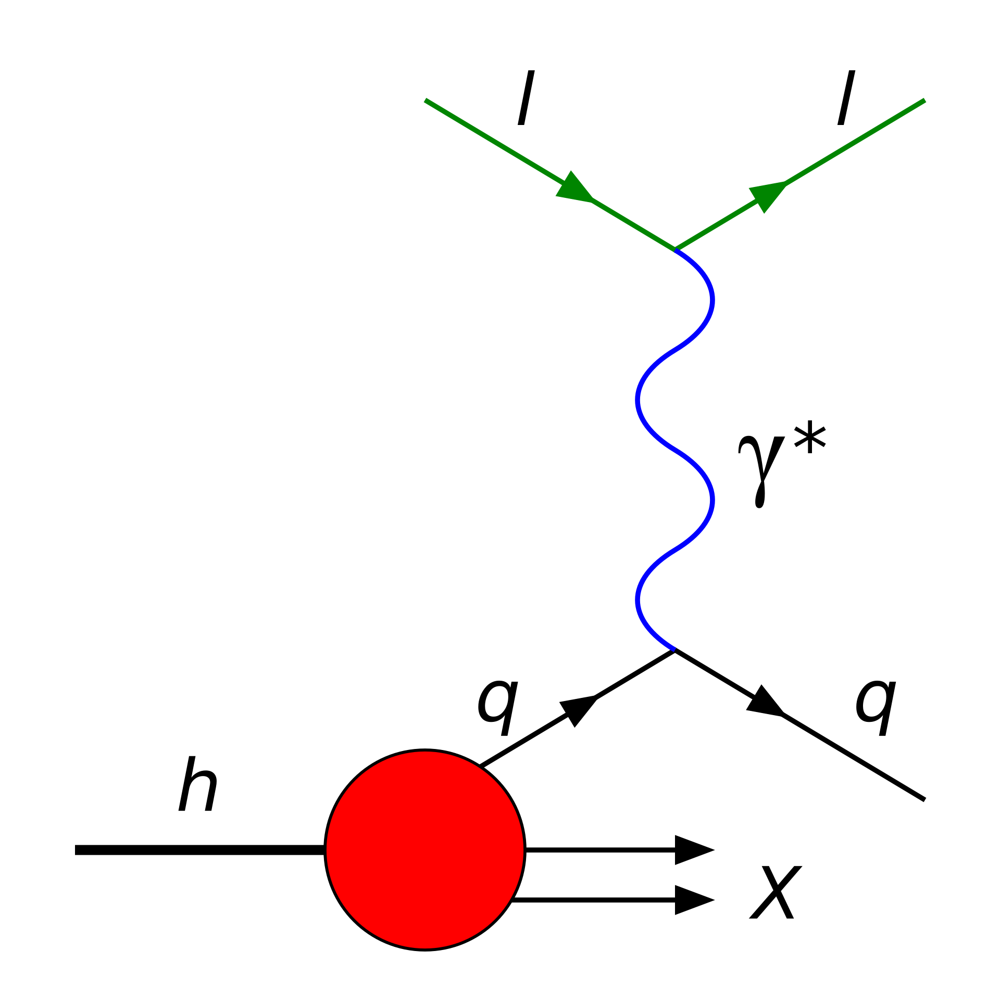
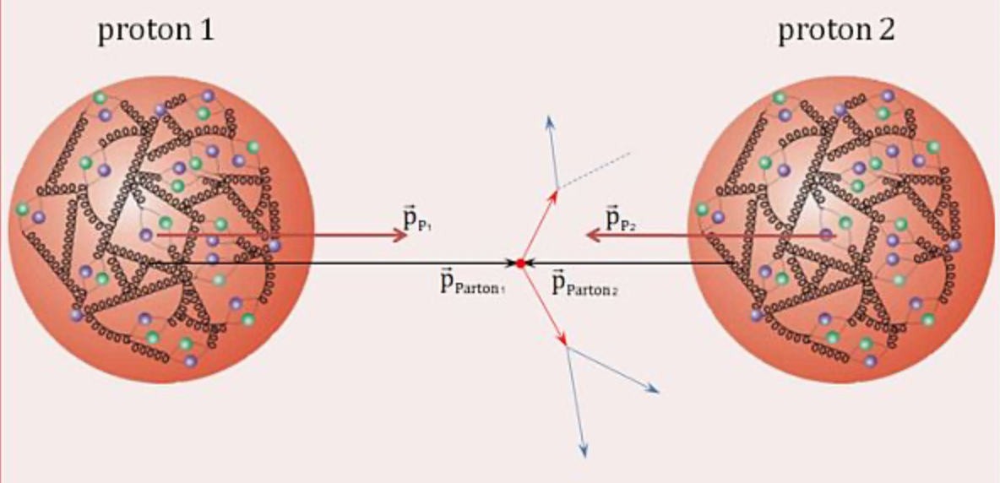
Figure 4.7: Feynman diagram for deep inelastic scattering, reproduced
from Ref. [94] (left) and an illustrative example of proton-proton collisions
reproduced from Ref. [95] (right).
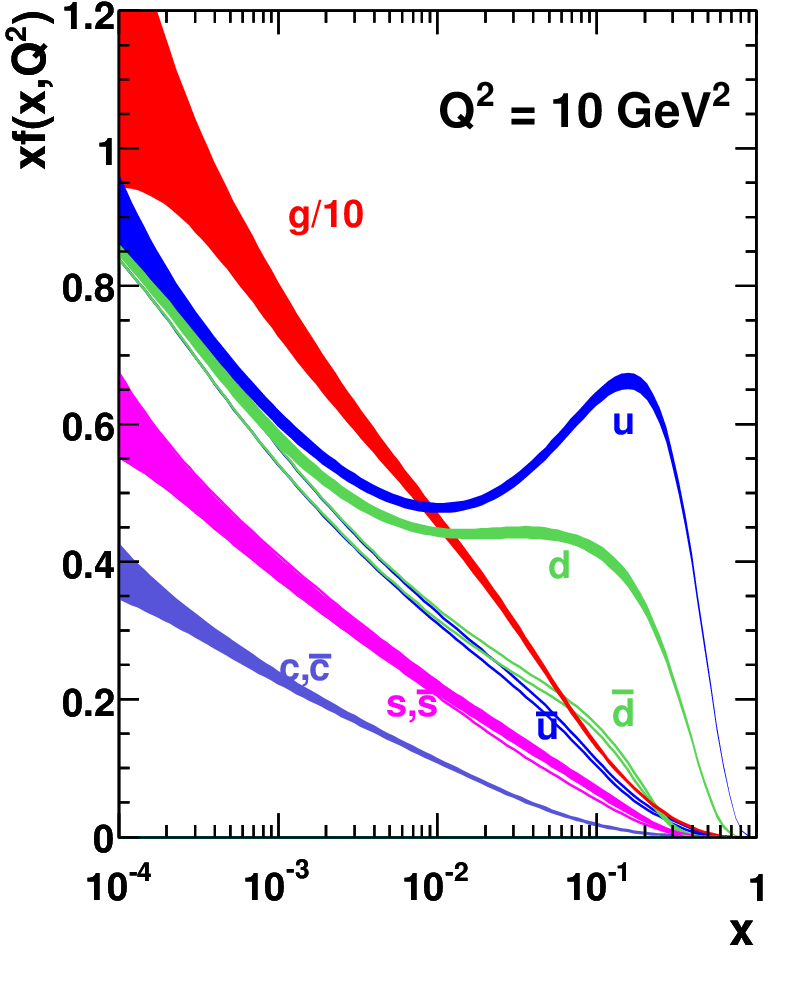
Figure 4.8: PDFs for the proton at ,
reproduced from Ref. [96].
The partonic cross section
The partonic cross-section
is an important theoretical input for measurements at high energy colliders. The
dependence on
is perhaps surprising; however, it represents the fact that
is calculated
perturbatively: the
dependence only appears in the highest order term of the expansion. Indeed, this
scale dependence would disappear at infinite order in perturbation theory.
While it may seem a nuisance, in fact, it provides a convenient handle to
estimate the uncertainties on our theoretical predictions by simply varying
and
.4
One important feature to keep in mind regarding the perturbative calculations
for hadron colliders is that the leading order (LO) predictions are often a factor of
off the higher order next-to-LO (NLO) and next-to-NLO (NNLO)
calculations. This is exemplified in the predictions for Z boson
production at the LHC, shown in Figure 4.9. The reason for this, despite
being reasonably
small () at the scale
for this process , is
simply that the
corrections have large coefficients [11]. This is why measurements at the LHC
relying on LO simulations often multiply the cross-section with an NLO / LO
“K-factor”.
Practically, matrix elements are first calculated as a function of the input and
output “hard particle” momenta, after which event generator programs such as
MadGraph [97] use Monte Carlo (MC) methods to sample events appropriately
from the overall phase space. NLO and NNLO calculations are more complicated
and often involve weighting events negatively to represent subtractions at higher
orders [98].
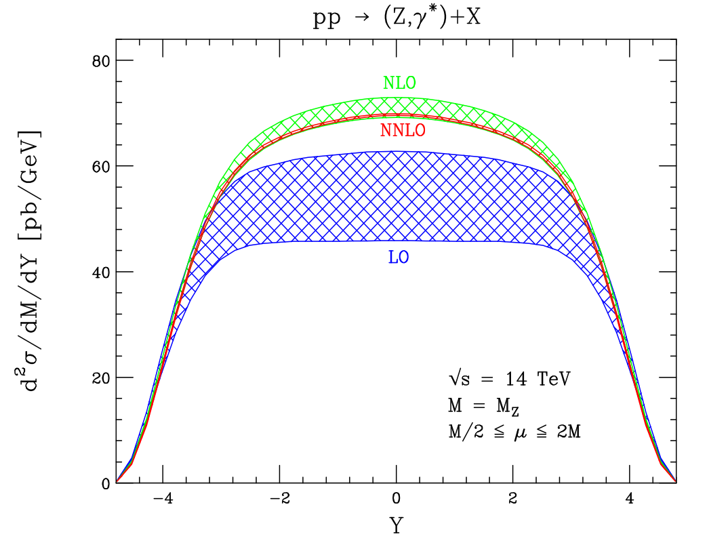
Figure 4.9: LO, NLO, and NNLO predictions and uncertainties for
to Z boson production, differential in rapidity
at the LHC, reproduced from Ref. [99].
Parton evolution
Each parton has a certain probability of radiating another quark
or gluon, with a fraction of the original parton’s momentum,
. These are called parton
splitting functions, ,
depicted in Figure 4.10, and can be calculated perturbatively in QCD (see e.g.
Ref. [11]). They are then further convolved with PDFs to derive their evolution
with the energy scale:
(4.4)
Equations 4.4 are called the Dokshitzer-Gribov-Lipatov-Altarelli-Parisi
(DGLAP) evolution equations, after five physicists who developed them in the
1970s, and are analogous to the renormalization group flows of coupling constants.
The dependence of the PDFs on the energy scale has been confirmed in DIS
experiments, which are then also used to fit the parameters of the PDFs, as shown
in Figure 4.11.
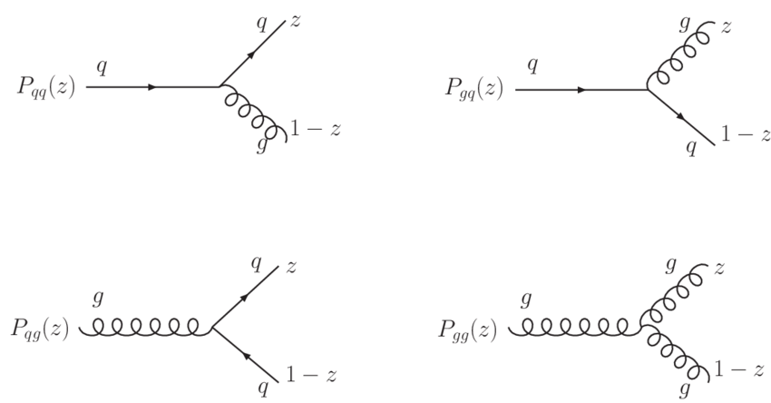
Figure 4.10: The splitting functions for quarks and gluons, reproduced from
Ref. [100].
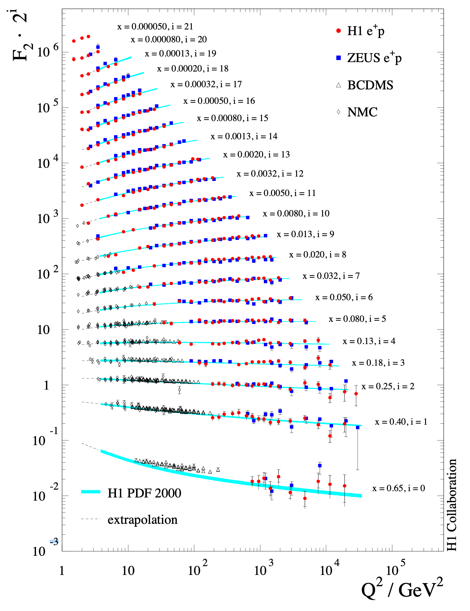
Figure 4.11: PDF measurements at different energy scales
and momentum fraction
by the H1 collaboration in DIS experiments, reproduced from Ref. [101].
4.1.4 Jets
As one may infer from the DGLAP equations (Eq. 4.4), when high energy
partons are produced at a collider, they will probabilistically radiate further and
further partons — called parton showering — until they approach the
confinement scale and start forming bound hadrons — called hadronization. For
sufficiently high energy initial partons, the resulting hadrons will appear as a
collimated spray of particles in the detector, called a jet (Figures 4.12
and 4.13).
Since quarks and gluons are never observed in isolation, their production can
only be inferred by understanding the jets they form. Moreover, at a hadron
collider, the high-energy hadrons continuously radiate partons before and after the
collision as well, with the resulting jets referred to as initial and final state
radiation (ISR and FSR), respectively. Such jets are by far the most prevalent
outputs of collisions at the LHC and, hence, represent a significant background in
many measurements and searches, particularly those searching for hadronic final
states.
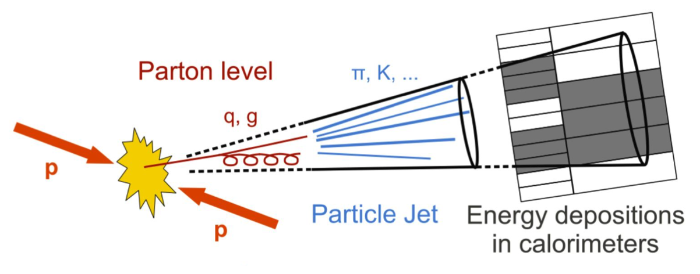
Figure 4.12: A cartoon of a jet, reproduced from Ref. [102].
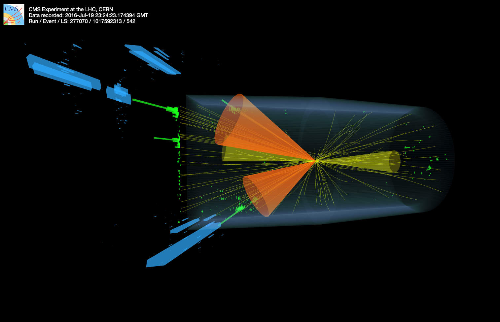
Figure 4.13: An example of real jets in an event collected by CMS and
identified in my dissertation [103, 104]. An interactive version of this event
display is available at https://cms3d.web.cern.ch/HIG-23-012/.
Parton showering
Jets can be understood and modeled by factorizing the dynamics. As above,
the parton scattering cross section (referred to as the hard process and
calculated perturbatively) is separated from the PDFs (measured from
data) and their evolution (DGLAP equations). This evolution is what
produces the showering, and is modeled by numerically iterating through
(or,
equivalently, through time) and randomly emitting new partons according to the
splitting functions via MC sampling.
There are several subtleties involved in this process which numerical parton
shower generators, such as pythia [105], herwig [106], and sherpa [107] must
account for. First, the probability of gluon emission diverges in the soft — i.e., low
gluon energy — and collinear — small gluon angle with the parent parton —
limits. Physically, this can be interpreted as the limit of our experimental
resolution: at a certain point we cannot resolve two close-by or detect arbitrarily
soft particles.
These are known as the infrared and collinear (IRC) divergences, respectively,
and are typically regulated by introducing cut-off energies and angles for
emissions (below which we can reasonably argue that perturbation theory is
anyway invalid). These divergences also mean that when analyzing jets in
experimental data, care must be taken in defining observables to be IRC-safe,
meaning that jet clustering algorithms and physical properties derived therein
should not be sensitive to arbitrarily soft or collinear emissions.
Another issue is that a naive combination of the hard matrix element and
subsequent parton shower calculations may lead to double-counting of emissions,
as illustrated in Figure 4.14. This necessitates a careful “matching procedure”,
such as the most common MLM scheme [108], which defines cut-off energy
and angular scales to separate the matrix element and parton shower
phase spaces. Other considerations include preserving unitarity, color
coherence and color flow, and differences between ISR and FSR (see e.g.
Refs. [109, 110]).
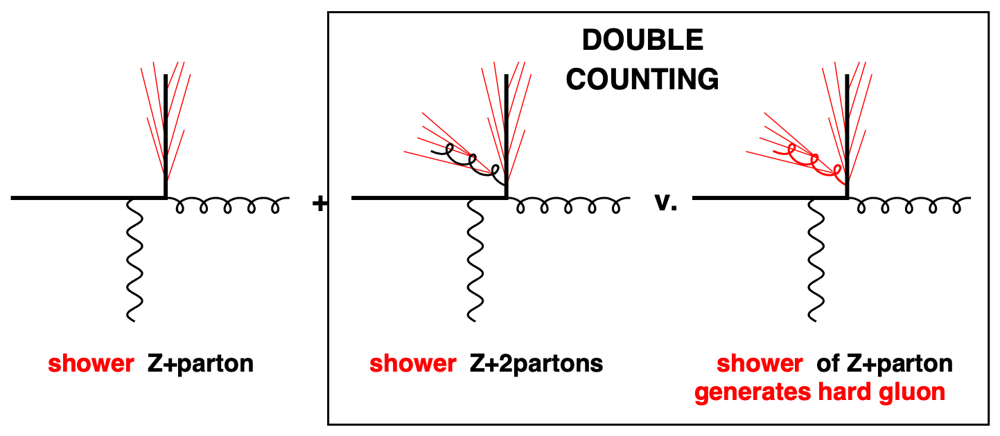
Figure 4.14: An illustration of double-counting when combining matrix
element predictions (in black) with parton showering algorithms (in red) for
parton
and 2-parton
events, reproduced from Ref. [11].
Hadronization
The final element of the factorized process is hadronization, once the parton
shower approaches the confinement scale. This is a completely nonperturbative
process and, hence, like PDFs, we must rely on numerical simulations and
experimental measurements.
Lattice QCD simulations, such as those shown in Figure 4.4, indicate that in
the low energy limit, the effective potential between quarks increases linearly with
distance, resembling string tension:
(4.5)
where is
the string tension coefficient. In fact, this analogy can be extended further: above
a certain energy, the string appears to “snap”, in the sense that it becomes
possible and energetically more favorable to produce a quark-antiquark
pair.
This analogy the basis of the Lund string model of hadronization [111],
illustrated in Figure 4.15. The strong force between the final state partons is
modeled as a series of strings stretched between them that probabilistically break
into new partons. Other models are based on clustering partons into color-neutral
combinations [106].
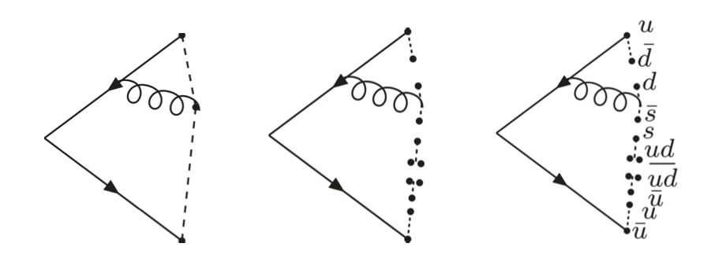
Figure 4.15: An illustration of the Lund string model of hadronization,
reproduced from Ref. [112].
2The phenomenon of an energy scale arising from a dimensionless coupling constant is
known as dimensional transmutation (see e.g. Tong SM [5] Chapter 3).
3See lectures by Torsten Pfoh [92] and Joey Huston [93] for useful pedagogical
discussions.